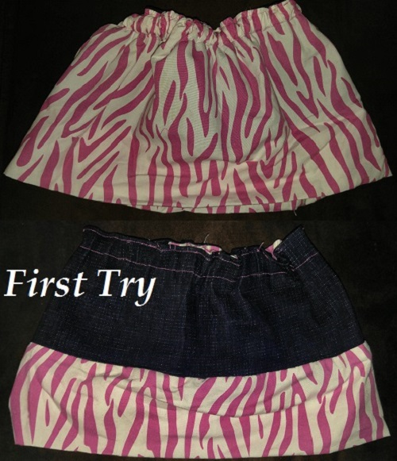
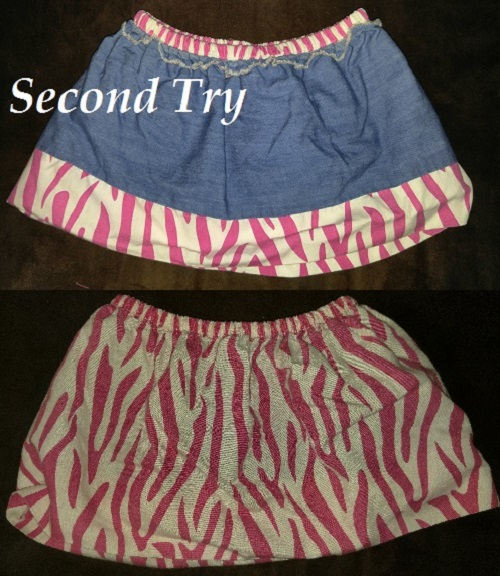

Featured Products

Green Apron
Size-Large
Perfect for your little baker!

Elsa Costume
Size-Medium
Inspired by the disney movie Frozen!


The Creative Process: How?
So we know what the creative process is, we know what inspires us to create, all that’s left is to produce a plan of action. In my case, after several years, I have a pretty standard method that I use every time.
- I am inspired either by a need (gift, household item, etc.) or by an object that I find.
- If it’s the former, then I start to hunt for objects around my house that will fit that need.
- If it’s the latter I jump on the internet and start hunting for ideas on how to use the object. More often than not I end up on the internet searching regardless.
- Once I have a general plan I dive in, this is where it gets interesting…. And frankly hard to explain.
- As I run into obstacles I rely on my experience/ingenuity to come up with solutions. I don’t know how to explain it any better than that. There are very few projects I have fully abandoned although it has happened.
- If necessary I will start over here and using what I know I will fix the issues and hopefully succeed the second time.
- REPEAT!
One example of this was a skirt I made for my daughter. It was made out of an old fitted bed sheet and also some jean material I had. My first time around I used a jean material that was WAY to “heavy” for such a small, ruched, skirt. And I had to abandon it. Second time around I used a cotton blend that looked like jean material and it turned out great!


Your “how” may be way different than mine and that’s the best part about it. There is no “right” way to do it. All that matters is how everything looks in the end! The key is to never give up and to learn from your mistakes. Click here for some other idea generators and helpful websites.
Back to Ideas